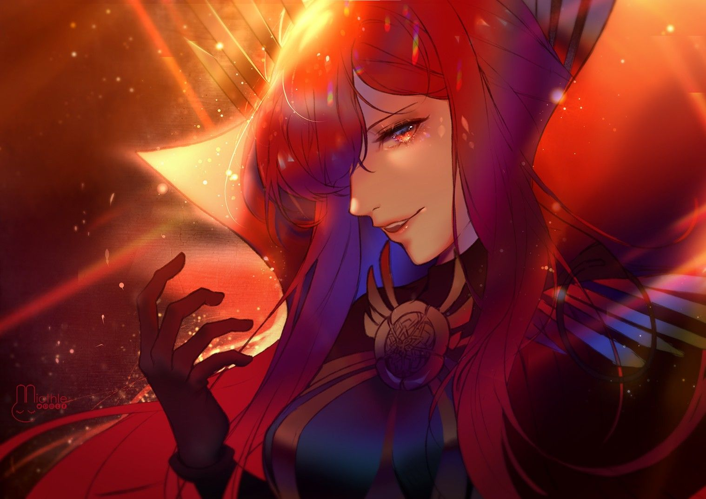

AURORA
HISTORIA
Um ser muito mais antigo que veio au mudo sem saber o que era ou quem era, ela só sabia que tinha que seguir ordens implantadas nela e assim ela viveu por muito mais muito tempo , por alguma razão que ela não sabe seu corpo não envelhece e ela tem um poder que lhe foi dado para ajudar nessa missão então ela viveu seguindo essas ordens mesmo que se questionando o porquê de ter eles , mais ainda sim fazia pois ela não sabia o que fazer até que um dos muitos experimento que ela ajudou seguindo as ordens sofreu um imprevisto e foi descartado mais os outros humanos envolvidos viram possibilidade de melhora para essa falha , então foi decidido que eles forneceriam uma vida para desenvolver a falha . Com ela ajudando, toda a vida da falha foi manipulada ,todos os encontros , todos seus amigos , até mesmo seu ser mais precioso foi manipulado para ser assim e todo seu ódio também foi impostos na falha , até que uma coisa mexeu com esse ser…. ela achou que quando a verdade foi posta na frente da falha a falha iria aceitar seu destino como somente alguém para seguir ordens e nada mais , mas ela não esperava que a falha iria escolher acreditar nessas emoções induzidas na falha e escolher desafiar seu destino de marionete e isso acendeu uma faísca dentro desse ser de querer ser livre mais seja por bem ou por mal a falha encontrou sua morte na luta contra a verdade e isso fez com que o ser desenvolve-se um respeito pela falha e sua faísca de liberdade se transformou em um fogo incandescente então pela primeira vez em sua longa vida o ser decidiu viver do jeito que quiser e como quiser sem seguir ordens de ninguém assim como a falha queria viver ela vai viver para desafiar o destino e lutar para ser livre.
PODER
Controle do espaço
status:
- Hp: 4
- P.a: 18
- Poder: 0
- Fisico: 1
- Presensa: 1
- Inteligencia: 3